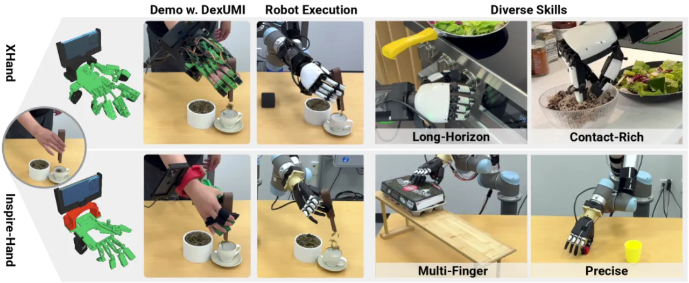
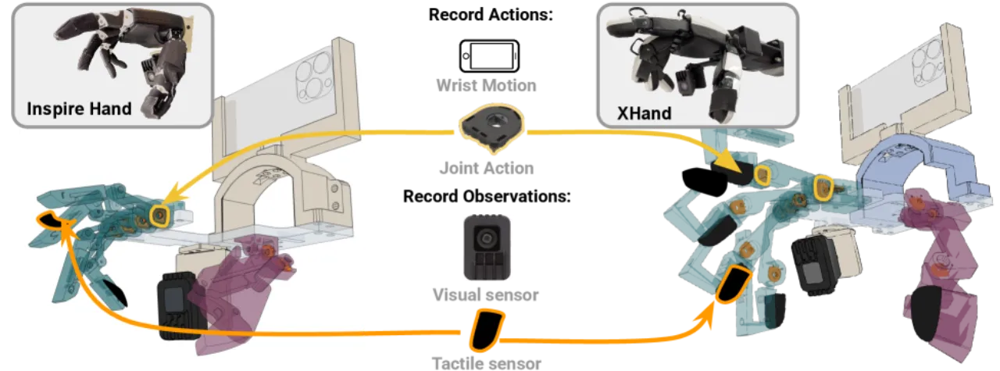
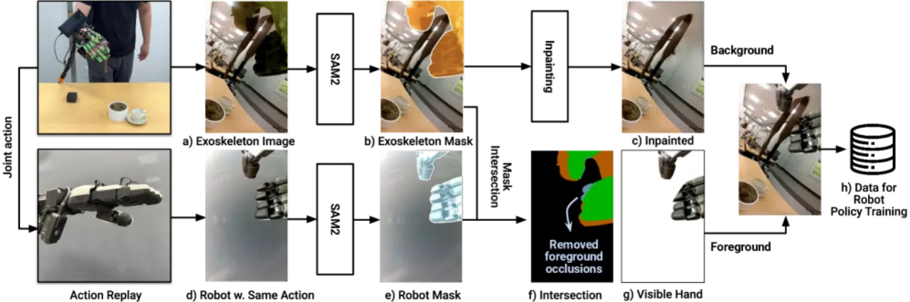
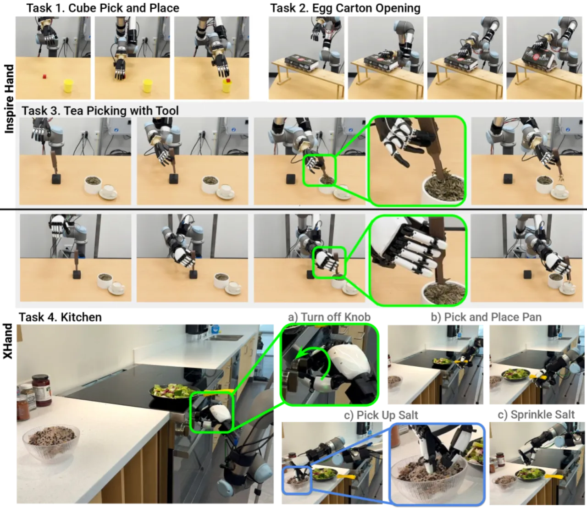
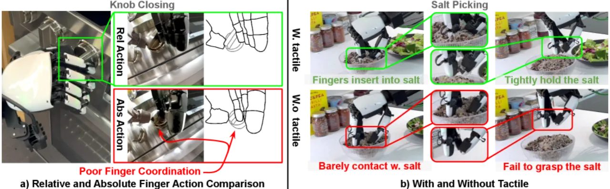

DexUMI 提出一套软硬件协同框架，通过可穿戴外骨骼采集人类灵巧操作数据，并利用视觉域适应（robot hand inpainting）消除视觉外观差异，从而将人类手部技能高效、通用地迁移至不同构型的机器人手，在两款机器人平台上实现平均 86% 的任务成功率。
机器人灵巧操作的数据采集极为困难：遥操作（teleoperation）因缺乏直接触觉反馈且存在空间观测不匹配，导致效率低下；而人类演示又因运动学结构、接触面形状、触觉信息和视觉外观的差异，无法直接迁移到机器人手——这一差异被称为 embodiment gap。
"How can we minimize the embodiment gap, so that we can use the human hand as the universal manipulation interface for diverse robot hands?"

DexUMI 通过两条并行路径弥合 embodiment gap：硬件适应——设计针对目标机器人手双层优化的可穿戴外骨骼，使运动学工作空间高度匹配；软件适应——构建视觉流水线，将演示视频中的外骨骼/人手无缝替换为机器人手图像，消除视觉分布差异。

外骨骼并非通用设计，而是针对每款目标机器人手通过 bi-level workspace matching 优化参数。优化目标为最大化外骨骼与机器人手工作空间的双向相似度：第一项鼓励外骨骼覆盖机器人手的可达工作空间；第二项约束外骨骼生成的动作落在机器人手能力范围之内（⊆ 约束），防止产生不可复现的姿态。拇指采用专项机制设计以避免碰撞同时保留指尖映射精度。

视觉流水线分四步：① 使用 SAM2 对每帧进行手部分割；② 使用 ProPainter 进行光流引导的背景修复（inpainting）；③ 使用真实机器人手按照采集动作序列录制对应视角视频；④ 采用 occlusion-aware compositing 将机器人手自然融合到恢复背景中，保留物体被遮挡的自然关系。策略动作采用 relative trajectory（相对轨迹）而非绝对坐标，以提升对硬件噪声的鲁棒性。
外骨骼集成 FSR（力敏电阻）传感器，其布局与目标机器人手的触觉传感器对应，直接采集接触力信号，用于需精细力控的任务策略学习。实验表明触觉反馈对采用 relative action 的策略有显著帮助。
在 15 分钟的采集会话中，DexUMI 达到传统遥操作方法 3.2 倍的采集效率（以 tea picking using tool 任务为基准）。采集的轨迹数量：Cube Picking 310 条，Egg Carton 175 条，Tea Picking 400 条，Kitchen 370+100 条。
实验在两款商用灵巧手（Inspire Hand 和 XHand）上评测，涵盖 5 个任务：Cube Picking、Egg Carton Opening、Tea Picking（工具/散叶）、厨房综合任务（Knob/Pan/Salt）。策略基于 Diffusion Policy，评估指标为任务成功率（success rate）。
| 任务 | 平台 | 成功率 |
|---|---|---|
| Cube Picking | Inspire Hand | 1.00 |
| Egg Carton Opening | Inspire Hand | 0.85 |
| Tea Picking (tool) | Inspire Hand | 1.00 |
| Tea Picking (leaf) | Inspire Hand | 0.85 |
| Tea Picking (tool) | XHand | 1.00 |
| Tea Picking (leaf) | XHand | 0.85 |
| Kitchen — Knob | XHand | 0.95 |
| Kitchen — Pan | XHand | 0.75 |
| Kitchen — Salt | XHand | 0.75 |

| 视觉输入方式 | Cube Picking | Egg Carton | Tea (tool) |
|---|---|---|---|
| Raw image（原始图像） | 0.20 | 0.05 | 0.85 |
| Masked image（掩码图像） | 0.60 | 0.10 | 0.90 |
| DexUMI Inpainting | 1.00 | 0.85 | 1.00 |

尽管提出了双层优化框架，外骨骼的机械设计仍需针对每款目标机器人手进行适配，无法做到完全通用。3D 打印材料在人手力的作用下可能发生形变，影响关节编码器的测量精度。
当前的工作空间匹配优化专注于指尖轨迹，未考虑掌心（palm）接触几何，限制了需要整手接触的操作任务的适用范围。
FSR 触觉传感器对贴附方式敏感，高压下电磁传感器存在漂移（drift）问题。机器人关节的间隙（backlash）和摩擦导致编码器精度仅在单方向上可靠。
生成机器人手图像需要真实机器人硬件配合录制，无法完全离线生成。Inpainting 在光照条件差异较大时存在伪影（artifacts）。相机固定于手部，不支持移动相机视角。